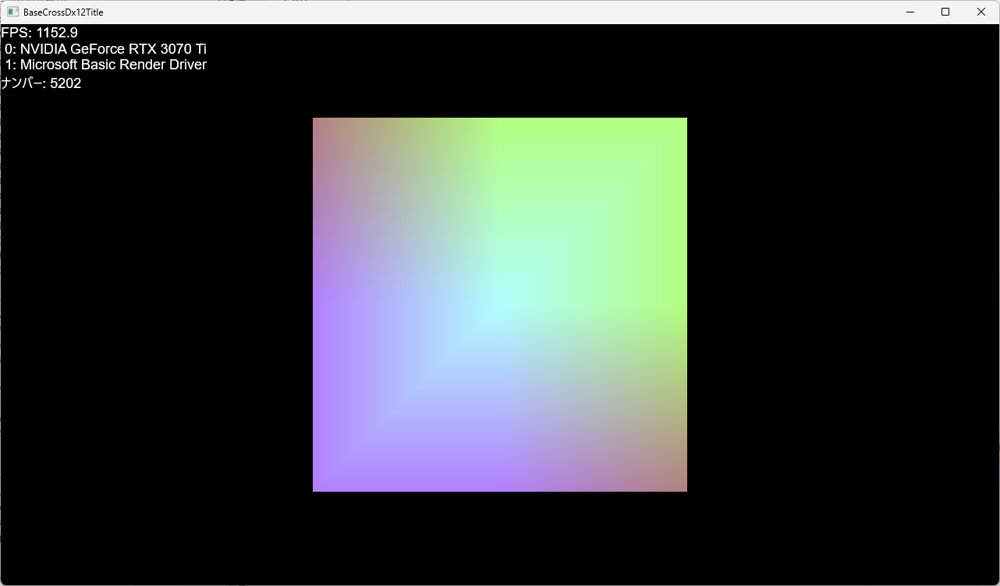
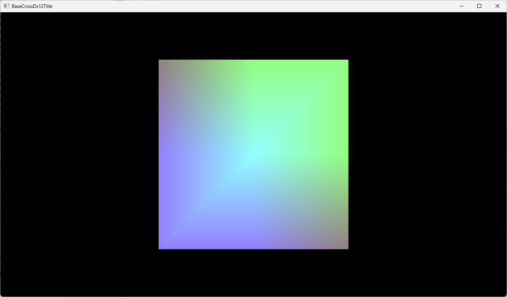

BaseCrossDx12ドキュメント
【Sample001】単純な四角形の描画
このサンプルはSample001ディレクトリ内にあります。VisualStdioで該当ソリューション（例えばVS2022ならBaseCrossDx12VS2022.sln）を開いてください。ビルド後実行すると、以下の画面が現れます。

左上にFPS: 842.7などのデバッグ情報が表示されています。
デバッグ文字列
まずは、この文字列の修正および非表示を説明しますプロジェクト内ヘッダー ファイルのScene.hを開くと、以下の関数があります。
//--------------------------------------------------------------------------------------
// デバッグ文字列の更新
// 何もしない
//--------------------------------------------------------------------------------------
virtual void UpdateUI(std::wstring& uiText)override{}
何もしない状態ですとデバッグ情報はFPS値およびそのマシンに設定されているGPUドライバー名が表示されます。今、表示されている環境はFPSは842.7（つまり１秒間に842.7回計算される）であり、GPUはNVIDIA GeForce RTX 3070 TiとMicrosoft Basic Render Driverが存在します。
この中で使用されているのは最初のGPUドライバーです。この環境ではNVIDIA GeForce RTX 3070 Tiです。
この設定を変更することも可能ですがBaseCrossDx12デフォルトでは実装されていません。（フレームワークとしてはあまり意味があるとは思えないので）
さて、FPS値やGPU名も重要かと思いますが、これに、ゲーム作成の上で出力させたい情報もあると思います。例えば、何かのカウンタを表示させるには、
virtual void UpdateUI(std::wstring& uiText)override{
static UINT num = 0;
auto wstr = L"ナンバー: " + Util::UintToWStr(num) + L"\n";
uiText += wstr;
num++;
}
とすると以下のようになります。

virtual void UpdateUI(std::wstring& uiText)override{
uiText = L"";
}
とすると、文字列は何も表示されなくなります。

最低限設定しなければいけないもの
BaseCrossDx12は、前バージョンのBaseCross64（DirectX11版）に比べ、フレームワークが行う部分が、特に描画処理において、縮小されています。これは、ベースとなっているDirectX12が、アプリケーションプログラマがやらなければいけないことが極端に増え、また、その分自由度が高まったといえるために、必要とされるDirectX12リソースを、できるだけフレームワーク側では作らない方向で設計されているからです。
作らなくてはいけないDx12リソースは以下です。
- 頂点シェーダとピクセルシェーダ
- パイプラインステート
- ゲームで使用されるゲームステージとゲームオブジェクト
BaseSceneクラスとSceneクラス
BaseCrossDx12でゲームを作成するにはBaseSceneクラスとSceneクラスの関係を理解することが必要不可欠です。BaseCrossDx12のライブラリプログラムはLibs/BaseLibフォルダに配置され、その中のBasicにあります。
Libs/BaseLib/Basic/BaseScene.hがBaseSceneクラスのヘッダでありLibs/BaseLib/Basic/BaseScene.cppがBaseSceneクラスの本体ということになります。このクラスには、Dx12の大部分のリソースを作成、レンダリングなどの処理がかかれていたり、仮想関数が準備されたりしています。
コンテンツ側のヘッダー ファイルの中にあるScene.hがBaseSceneクラスを継承したSceneクラスのヘッダであり、ソース ファイルの中のScene.cppがその実体となります。
以下に親クラスであるBaseSceneクラスの仮想関数群を紹介します。
//--------------------------------------------------------------------------------------
/// ベースシーン（親クラス）
//--------------------------------------------------------------------------------------
class BaseScene
{
protected:
BaseScene(UINT frameCount, PrimDevice* pPrimDevice);
virtual ~BaseScene();
public:
//中略
//初期化
virtual void Initialize(ID3D12Device* pDevice, ID3D12CommandQueue* pDirectCommandQueue, ID3D12GraphicsCommandList* pCommandList, UINT frameIndex);
//更新（純粋仮想関数）
virtual void Update(double elapsedTime) = 0;
//中略
//UI文字列の更新
virtual void UpdateUI(std::wstring& uiText){}
protected:
//中略
//これよ仮想関数
//以下、D3Dリソースの作成
virtual void CreateDescriptorHeaps(ID3D12Device* pDevice);
virtual void CreateCommandLists(ID3D12Device* pDevice);
virtual void CreateRootSignatures(ID3D12Device* pDevice);
virtual void CreatePipelineStates(ID3D12Device* pDevice) = 0;
virtual void CreateBaseFrames(ID3D12Device* pDevice, ID3D12CommandQueue* pCommandQueue);
virtual void CreateAssetResources(ID3D12Device* pDevice, ID3D12GraphicsCommandList* pCommandList);
virtual void CreateSceneResources(ID3D12Device* pDevice, ID3D12GraphicsCommandList* pCommandList) = 0;
virtual void CreatePostprocessPassResources(ID3D12Device* pDevice);
virtual void CreateSamplers(ID3D12Device* pDevice);
//フレーム処理の準備
virtual void BeginFrame();
//フレームのリセット
virtual void MidFrame();
//フレームの終了
virtual void EndFrame(bool setBackbufferReadyForPresent);
//シャドウとシーンの描画処理
virtual void WorkerThread();
//描画処理（シャドウ）
virtual void ShadowPass(ID3D12GraphicsCommandList* pCommandList) = 0;
//描画処理（シーン）
virtual void ScenePass(ID3D12GraphicsCommandList* pCommandList) = 0;
//描画処理（ポストプロセス）
virtual void PostprocessPass(ID3D12GraphicsCommandList* pCommandList);
};
この中で= 0;となっている関数群が純粋仮想関数であり、継承するクラスで必ず定義しなければいけない関数です。一方、派生クラスであるSceneクラスは、プロジェクト側のヘッダーファイル内にScene.hが、ソース ファイル内にScene.cppがあります。
実際にファイルがおかれているディレクトリは、どちらもプロジェクトのディレクトリになります。
では早速Sceneクラスを見ていきましょう。
まず、Scene.hですが、以下のようになっています。
//--------------------------------------------------------------------------------------
// シーン
//--------------------------------------------------------------------------------------
class Scene : public BaseScene
{
std::shared_ptr<PcSprite> m_pcSprite;
public:
Scene(UINT frameCount, PrimDevice* pPrimDevice);
virtual ~Scene();
//--------------------------------------------------------------------------------------
// 更新処理
//--------------------------------------------------------------------------------------
virtual void Update(double elapsedTime)override;
//--------------------------------------------------------------------------------------
// デバッグ文字列の更新
// 何もしない
//--------------------------------------------------------------------------------------
virtual void UpdateUI(std::wstring& uiText)override{}
protected:
//--------------------------------------------------------------------------------------
// D3Dリソースの作成
//--------------------------------------------------------------------------------------
virtual void CreatePipelineStates(ID3D12Device* pDevice)override;
virtual void CreateSamplers(ID3D12Device* pDevice)override {}
//--------------------------------------------------------------------------------------
// オブジェクト作成
//--------------------------------------------------------------------------------------
virtual void CreateSceneResources(ID3D12Device* pDevice, ID3D12GraphicsCommandList* pCommandList)override;
//--------------------------------------------------------------------------------------
// 描画処理（シャドウ）
// 何もしない
//--------------------------------------------------------------------------------------
virtual void ShadowPass(ID3D12GraphicsCommandList* pCommandList)override{}
//--------------------------------------------------------------------------------------
// 描画処理（シーン）
//--------------------------------------------------------------------------------------
virtual void ScenePass(ID3D12GraphicsCommandList* pCommandList)override;
//--------------------------------------------------------------------------------------
//描画処理（ポストプロセス）
//何もしない
//--------------------------------------------------------------------------------------
virtual void PostprocessPass(ID3D12GraphicsCommandList* pCommandList)override{}
};
ここで注目すべきは、何もしない３つの関数です。
//--------------------------------------------------------------------------------------
// デバッグ文字列の更新
// 何もしない
//--------------------------------------------------------------------------------------
virtual void UpdateUI(std::wstring& uiText)override{}
//--------------------------------------------------------------------------------------
// 描画処理（シャドウ）
// 何もしない
//--------------------------------------------------------------------------------------
virtual void ShadowPass(ID3D12GraphicsCommandList* pCommandList)override{}
//--------------------------------------------------------------------------------------
//描画処理（ポストプロセス）
//何もしない
//--------------------------------------------------------------------------------------
virtual void PostprocessPass(ID3D12GraphicsCommandList* pCommandList)override{}
このサンプルでは、サンプラーも使わないし影（シャドウ）も使わないしポストエフェクトも使わないので、該当関数を定義しないようにしています。そういう場合は継承したうえで何もしない処理を書くと楽ちんです。
それではScene.cppを見ていきましょう。
パイプラインステートの作成
最初は、Scene::CreatePipelineStates(ID3D12Device* pDevice)関数です。パイプラインステートを作成します。
void Scene::CreatePipelineStates(ID3D12Device* pDevice) {
// スプライトのパイプラインステートの作成
{
D3D12_GRAPHICS_PIPELINE_STATE_DESC psoDesc = {};
psoDesc.InputLayout = { VertexPositionColor::GetVertexElement(), VertexPositionColor::GetNumElements() };
psoDesc.pRootSignature = m_rootSignatures[RootSignature::SpritePass].Get();
psoDesc.VS =
{
reinterpret_cast<UINT8*>(VSPCSprite::GetPtr()->GetShaderComPtr()->GetBufferPointer()),
VSPCSprite::GetPtr()->GetShaderComPtr()->GetBufferSize()
};
psoDesc.PS =
{
reinterpret_cast<UINT8*>(PSPCSprite::GetPtr()->GetShaderComPtr()->GetBufferPointer()),
PSPCSprite::GetPtr()->GetShaderComPtr()->GetBufferSize()
};
psoDesc.RasterizerState = CD3DX12_RASTERIZER_DESC(D3D12_DEFAULT);
psoDesc.BlendState = CD3DX12_BLEND_DESC(D3D12_DEFAULT);
psoDesc.DepthStencilState.DepthEnable = FALSE;
psoDesc.DepthStencilState.StencilEnable = FALSE;
psoDesc.SampleMask = UINT_MAX;
psoDesc.PrimitiveTopologyType = D3D12_PRIMITIVE_TOPOLOGY_TYPE_TRIANGLE;
psoDesc.NumRenderTargets = 1;
psoDesc.RTVFormats[0] = DXGI_FORMAT_R8G8B8A8_UNORM;
psoDesc.SampleDesc.Count = 1;
ComPtr<ID3D12PipelineState> pipelineStateSprite;
ThrowIfFailed(pDevice->CreateGraphicsPipelineState(&psoDesc, IID_PPV_ARGS(&pipelineStateSprite)));
BasicPipelineStatePool::AddPipelineState(L"PCSprite", pipelineStateSprite);
}
}
パイプラインステートの設定は非常に頭の痛い問題です。その内容は多岐にわたり、細かく設定できるのですが、逆に言えば細かく設定しなければいけないということです。BaseCrossDx12では、できるだけ簡略できる処理は、フレームワーク側で選択肢を用意しています。例えば以下の設定ですが
psoDesc.InputLayout = { VertexPositionColor::GetVertexElement(), VertexPositionColor::GetNumElements() };
ではInputLayoutを設定しています。VertexPositionColorなどの頂点定義においてGetVertexElement()関数やGetNumElements()関数によって設定値を取得することができます。これはライブラリのBasic/VertexHelper.h/cppで確認することができます。続いて
psoDesc.pRootSignature = m_rootSignatures[RootSignature::SpritePass].Get();ですが、ここではデフォルトのルートシグネチャをいくつか定義呼び出しています。それはm_rootSignatures配列に収められ、RootSignature::SpritePassなどのenum値によってアクセスできます。
このenum値は以下のように定義されています。BaseScene.hに定義されています。
namespace SceneEnums
{
namespace RenderPass {
enum Value { Scene = 0, Shadow, Postprocess, Count };
}
namespace DepthGenPass {
enum Value { Scene = 0, Shadow, Count };
}
namespace RootSignature {
enum { ShadowPass = 0, ScenePass, SpritePass, PostprocessPass, Count };
};
namespace VertexBuffer {
enum Value { ScreenQuad = 0, Count };
}
}
using namespace SceneEnums;
のように定義されているのでm_rootSignatures[RootSignature::SpritePass]はすなわちm_rootSignatures[2]ということになります。BaseCrossDx12のルートシグネチャはShadowPass, ScenePass, SpritePass, PostprocessPassの４つ定義されています。BaseScene::CreateRootSignatures(ID3D12Device* pDevice)関数をoverrideすることにより、独自のルートシグネチャセットを作ることができます。
シェーダーの作成
続いてシェーダーですが、ここでは頂点シェーダとピクセルシェーダーを設定します。
psoDesc.VS =
{
reinterpret_cast<UINT8*>(VSPCSprite::GetPtr()->GetShaderComPtr()->GetBufferPointer()),
VSPCSprite::GetPtr()->GetShaderComPtr()->GetBufferSize()
};
psoDesc.PS =
{
reinterpret_cast<UINT8*>(PSPCSprite::GetPtr()->GetShaderComPtr()->GetBufferPointer()),
PSPCSprite::GetPtr()->GetShaderComPtr()->GetBufferSize()
};
赤くなっているところはBaseCrossDx12特有の仕様でScene.hの上部に記述されている
//-------------------------------------------------------------------------------------- // シェーダー //-------------------------------------------------------------------------------------- DECLARE_DX12SHADER(VSPCSprite) DECLARE_DX12SHADER(PSPCSprite)および、Scene.cppの上部に記述されている
//-------------------------------------------------------------------------------------- /// シェーダー //-------------------------------------------------------------------------------------- IMPLEMENT_DX12SHADER(VSPCSprite, App::GetShadersDir() + L"VSPCSprite.cso") IMPLEMENT_DX12SHADER(PSPCSprite, App::GetShadersDir() + L"PSPCSprite.cso")で、作成します。これらはマクロになっておりシェーダークラスを作り出します。
VSPCSprite.cso、PSPCSprite.csoは、ビルド時にコンパイルされるシェーダーのバイナリで、シェーダーファイルに収められ、元になるhlslファイルは、プロジェクトのShadersディレクトリに入っています。それぞれプロパティの設定で、シェーダの種類や出力ファイルなどを設定します。
以下は頂点シェーダー（VSPCSprite.hlsl）です。
//--------------------------------------------------------------------------------------
// File: VSPCSprite.hlsl
//
//--------------------------------------------------------------------------------------
#include "INC2dConstant.hlsli"
#include "INCStructs.hlsli"
PSPCInput main(VSPCInput input)
{
PSPCInput result;
result.position = mul(input.position, MatrixTransform);
result.color = input.color;
return result;
}
インクルードされているINCStructs.hlsliは、構造体の宣言です。ここではVSPCInputやPSPCInputが定義されています。こちらは2D、3D関係なく共通で使用します。INC2dConstant.hlsliは定数バッファのシェーダー側定義です。内容は以下です。
Texture2D g_texture : register(t0);
SamplerState g_sampler : register(s0);
cbuffer ConstantBuffer : register(b0)
{
row_major float4x4 MatrixTransform : packoffset(c0);
float4 Emissive : packoffset(c4);
float4 Diffuse : packoffset(c5);
};
テクスチャとサンプラーも定義されていますが、ここでは使用してません。MatrixTransformがrow_majorとなっています。これにより、CPU側ではtransposeしないでシェーダに渡します。
以下は、ピクセルシェーダーです。PSPCSprite.hlslに記述があります。
//--------------------------------------------------------------------------------------
// File: PSPCSprite.hlsl
//
//--------------------------------------------------------------------------------------
#include "INC2dConstant.hlsli"
#include "INCStructs.hlsli"
float4 main(PSPCInput input) : SV_TARGET
{
//頂点色からライティングを作成
float4 Light = (saturate(input.color) * Diffuse) + Emissive;
return Light;
}
ここでは、定数バッファに渡されるEmissiveとDiffuseをもとに、出力するピクセル色を計算しています。パイプラインステートオブジェクトの作成
残りのパイプラインステートの設定は、PositionとColorを持つ頂点を描画するための、一般的なものです。D3D12_GRAPHICS_PIPELINE_STATE_DESC psoDescの記述が終わったら
ComPtr<ID3D12PipelineState> pipelineStateSprite; ThrowIfFailed(pDevice->CreateGraphicsPipelineState(&psoDesc, IID_PPV_ARGS(&pipelineStateSprite)));でパイプラインステートオブジェクトを作成します。作成したら
BasicPipelineStatePool::AddPipelineState(L"PCSprite", pipelineStateSprite);で、BasicPipelineStatePoolに登録します。パイプラインステートは、一つのアプリケーションにいくつもある必要がないので、L"PCSprite"という名前で登録しておきます。そうすると、使用するときに
//パイプラインステート auto scenePipeline = BasicPipelineStatePool::GetPipelineState(L"PCSprite"); pCommandList->SetPipelineState(scenePipeline.Get());のように取り出すことができます。この記述はCharacter.cppにあります。
シーン上のオブジェクトの作成
オブジェクトの作成はScene::CreateSceneResources(ID3D12Device* pDevice, ID3D12GraphicsCommandList* pCommandList)関数で行います。ここでは
//--------------------------------------------------------------------------------------
// オブジェクト作成
//--------------------------------------------------------------------------------------
void Scene::CreateSceneResources(ID3D12Device* pDevice, ID3D12GraphicsCommandList* pCommandList) {
auto scale = Vec3(480, 480, 1);
auto pos = Vec3(0, 0, 0);
m_pcSprite = ObjectFactory::CreateInitParam<PcSprite>(pCommandList, scale, pos);
}
のように記述されています。PcSpriteクラスはCharacter.h/cppで宣言定義され、m_pcSpriteという変数がインスタンスです。BaseCross64を使ったことがある人はわかると思いますが、BaseCrossDx12では、ステージという概念がありません。ですからGameObject（ゲームオブジェクト）がステージに縛られることもありません。
コンポーネントは存在しますがTransformが必須のようなこともありません。例えばこのサンプル（Sample001）では、コンポーネントは使っていません。
ここで使われているObjectFactory::CreateInitParam()関数は、OnCreate()関数にパラメータを渡してくれる関数です。PcSpriteクラスではメッシュを生成するので、その際にコマンドリストを必要とします。
コマンドリストのメンバ変数を作って、いったんコピーしてからOnCreate()関数で使いまわしもできますが、オブジェクト生成時に使用されるコマンドリストは、このタイミングでしか使わないのでOnCreate()関数に直接渡されるようにしています。
PcSpriteクラスのメンバ関数は後ほど説明します。
オブジェクトの更新
オブジェクトの更新はScene::Update()関数を使います。引数にelapsedTime（前のターンからの経過時間）が渡されます。
//--------------------------------------------------------------------------------------
//// オブジェクト更新
//--------------------------------------------------------------------------------------
void Scene::Update(double elapsedTime) {
m_pcSprite->OnUpdate(elapsedTime);
}
ここではm_pcSprite->OnUpdate()関数を呼び出します。
オブジェクトの描画（シーン）
オブジェクトの描画はScene::ScenePass()関数を使います。
//--------------------------------------------------------------------------------------
// 描画処理（シーン）
//--------------------------------------------------------------------------------------
void Scene::ScenePass(ID3D12GraphicsCommandList* pCommandList) {
m_pcSprite->OnSceneDraw(pCommandList);
}
ここではm_pcSprite->OnSceneDraw()関数を呼び出します。
ゲームオブジェクト（GameObject）
Sceneクラスにメンバ変数として配置されているm_pcSpriteはゲームオブジェクト（GameObject）を継承したクラスです。Character.h/cppに実装されています。以下がその宣言です。
//--------------------------------------------------------------------------------------
// PcSpriteクラス
//--------------------------------------------------------------------------------------
class PcSprite : public GameObject {
Vec3 m_scale;
Vec3 m_position;
double m_totalTime;
std::shared_ptr<BaseMesh> m_spriteMesh;
std::vector<VertexPositionColor> m_backupVertices;
std::vector<ConstBuffParam> m_constBuffParamVec;
public:
//構築と破棄
PcSprite();
virtual ~PcSprite();
//初期化（パラメータ付き）
void OnCreate(ID3D12GraphicsCommandList* pCommandList,const Vec3& scale,const Vec3& position);
//操作
virtual void OnUpdate(double elapsedTime) override;
virtual void OnSceneDraw(ID3D12GraphicsCommandList* pCommandList) override;
};
メンバ変数のうち、赤くなっているところの解説をします。
メッシュ
BaseCrossDx12では、1つの頂点の塊をメッシュというオブジェクトで管理します。ここで使用しているのはBaseMeshという型です。メッシュを作る元になるのは、頂点の配列です。ここではstd::vector<VertexPositionColor>の配列とstd::vector<uint32_t>の配列です。頂点の変更をしないのであれば、これらは関数のローカル変数として作成できるのですが、このサンプルでは頂点の配列を動的に変更するのでstd::vector<VertexPositionColor> m_backupVerticesというメンバ変数を持っています。OnCreate()関数において、以下のように初期化されます。
float helfSize = 0.5f;
//頂点配列
m_backupVertices = {
{ VertexPositionColor(Vec3(-helfSize, helfSize, 0),Col4(1.0f,0.0f,0.0f,0.0f)) },
{ VertexPositionColor(Vec3(helfSize, helfSize, 0), Col4(0.0f, 1.0f, 0.0f, 0.0f)) },
{ VertexPositionColor(Vec3(-helfSize, -helfSize, 0), Col4(0.0f, 0.0f, 1.0f, 0.0f)) },
{ VertexPositionColor(Vec3(helfSize, -helfSize, 0), Col4(0.0f, 0.0f, 0, 0.0f)) },
};
//インデックス配列
std::vector<uint32_t> indices = { 0, 1, 2, 1, 3, 2 };
m_spriteMesh = BaseMesh::CreateBaseMesh<VertexPositionColor>(pCommandList, m_backupVertices, indices);
定数バッファ（コンスタントバッファ）
std::vector<ConstBuffParam> m_constBuffParamVecというのは定数バッファ（コンスタントバッファ）を管理する型の配列です。ConstBuffParamは構造体ですが、以下が内容です。
//--------------------------------------------------------------------------------------
/// 定数バッファのパラメータ（構造体）
//--------------------------------------------------------------------------------------
struct ConstBuffParam {
ComPtr<ID3D12Resource> m_constantBuffer;
void* m_pConstantBufferWO;
UINT m_constBuffIndex;
};
リソース等、定数バッファへ書き込む情報が入っています。OnCreate()関数では、以下のように初期化されます。
//シーンのポインタを取得
auto pScene = BaseDevice::GetScene();
UINT frameCount = pScene->GetFrameCount();
m_constBuffParamVec.resize(frameCount);
for (UINT i = 0; i < frameCount; i++) {
m_constBuffParamVec[i] = pScene->GetframeResources()[i]->CreateConstBuffParam<Base2DConstant>();
}
Base2DConstantという型は、２Ｄ専用の定数バッファです。frameCountはバックバッファとフロントバッファの総数です。BaseCrossDx12では、GPUの機能をなるべく引き出したいので3になっています。これらをフレームと称します。定数バッファは、オブジェクト単位、フレーム単位でユニークになっています。これにより効率的になるのですが、では、アプリケーション全体では、定数バッファはいくつ作成できるのか、という疑問も出ます。3072個となります。これは約1000個のオブジェクトを同時に描画できる値です（とはいえ途中でFPSがいっぱいいっぱいになるとは思いますが・・・）。
これ以上になる場合は、動的に解放と取得を行えばいいのですが、そのサンプルは今後述べます。
更新処理
更新処理は以下です。
void PcSprite::OnUpdate(double elapsedTime) {
//シーンのポインタを取得
auto pScene = BaseDevice::GetScene();
//トータル時間の変更
m_totalTime += elapsedTime;
if (m_totalTime > XM_2PI) {
m_totalTime = 0.0;
}
//バックアップ頂点の変更
for (auto& vertex : m_backupVertices) {
vertex.color.x += (float)elapsedTime;
if (vertex.color.x > 1.0f) {
vertex.color.x = 0.0f;
}
}
//コンスタントバッファのUpdate
Base2DConstant constantBuffer = {};
Mat4x4 worldMat;
m_scale.z = 1.0f;
m_position.x = (float)sin(m_totalTime) * 200.0f;
worldMat.affineTransformation(
m_scale,
Vec3(0.0f),
Vec3(0.0f),
m_position
);
auto w = App::GetWidth();
auto h = App::GetHeight();
Mat4x4 ProjMatrix = XMMatrixOrthographicLH((float)w, (float)h, 0.0, 1.0);
worldMat *= ProjMatrix;
//2Dはtransposeしない
// worldMat.transpose();
constantBuffer.transform = worldMat;
constantBuffer.emissive = Col4(0.5f);
constantBuffer.diffuse = Col4(1.0f);
//コンスタントバッファのコミット
auto frameIndex = pScene->GetFrameIndex();
memcpy(
m_constBuffParamVec[frameIndex].m_pConstantBufferWO,
&constantBuffer,
sizeof(constantBuffer)
);
}
ここでは、まずm_totalTimeを更新して、バックアップ頂点と、定数バッファ（コンスタントバッファ）の変更を行います。頂点の色が変わるのは、動的に頂点情報が変わるためです。その処理を行うための準備を行います。すなわちバックアップ頂点を変更します。
また、オブジェクトが行ったり来たりする処理は、いわゆるサイン処理です。三角関数のsinカーブを利用して移動させています。
Mat4x4 worldMat（ワールド行列）を変更したら、射影行列をXMMatrixOrthographicLH()関数によって作り出し、それを掛け算します。その結果をconstantBuffer.transformにセットします。
BaseCrossDx12では２Ｄオブジェクトはtransposeしません。３Ｄはtransposeします。transposeするサンプルは次項以降に紹介します。出来上がったconstantBuffer変数を、現在のフレーム（描画時にフロントバッファになるフレーム）のＧＰＵ側リソースにコピーして更新処理は終了です。
描画処理
描画処理はPcSprite::OnSceneDraw()関数で行います。
void PcSprite::OnSceneDraw(ID3D12GraphicsCommandList* pCommandList) {
//シーンのポインタを取得
auto pScene = BaseDevice::GetScene();
auto rootSignatures = pScene->GetRootSignatures();
auto frameIndex = pScene->GetFrameIndex();
//頂点情報の変更
m_spriteMesh->UpdateVirtexBuffer<VertexPositionColor>(pCommandList, m_backupVertices);
//これより描画処理
//ルートシグネチャの設定
pCommandList->SetGraphicsRootSignature(rootSignatures[RootSignature::SpritePass].Get());
//パイプラインステートの設定
auto scenePipeline = PipelineStatePool::GetPipelineState(L"PCSprite");
pCommandList->SetPipelineState(scenePipeline.Get());
//定数バッファのセット
pCommandList->SetGraphicsRootConstantBufferView(
pScene->GetGpuSlotID(L"2d_b0"),
m_constBuffParamVec[frameIndex].m_constantBuffer->GetGPUVirtualAddress()
);
//そのほかの必要な設定
pCommandList->IASetPrimitiveTopology(D3D_PRIMITIVE_TOPOLOGY_TRIANGLELIST);
pCommandList->IASetVertexBuffers(0, 1, &m_spriteMesh->GetVertexBufferView());
pCommandList->IASetIndexBuffer(&m_spriteMesh->GetIndexBufferView());
pCommandList->RSSetViewports(1, &pScene->GetViewport());
pCommandList->RSSetScissorRects(1, &pScene->GetScissorRect());
pCommandList->OMSetRenderTargets(1, &pScene->GetCurrentBackBufferRtvCpuHandle(),
FALSE, &pScene->GetDepthDsvs()[DepthGenPass::Scene]);
//PcSpriteの描画
pCommandList->DrawIndexedInstanced(m_spriteMesh->GetNumIndices(), 1, 0, 0, 0);
}
これで、一連の処理が終わりです。頂点の変更（表示色の動的な変化）と定数バッファの変更（左右に移動する）を実装する2Dオブジェクトが完成しました。
BaseCrossDx12では、できるだけGPU（DirectX12）に直接アクセスする方法を提供しながら、フレームワークとしての便利さも提供したいと考えています。この2つの矛盾するテーマに挑みつつ、少しずつ前進していく所存ですので、どうか、長い目で見守っていただければ幸いです。